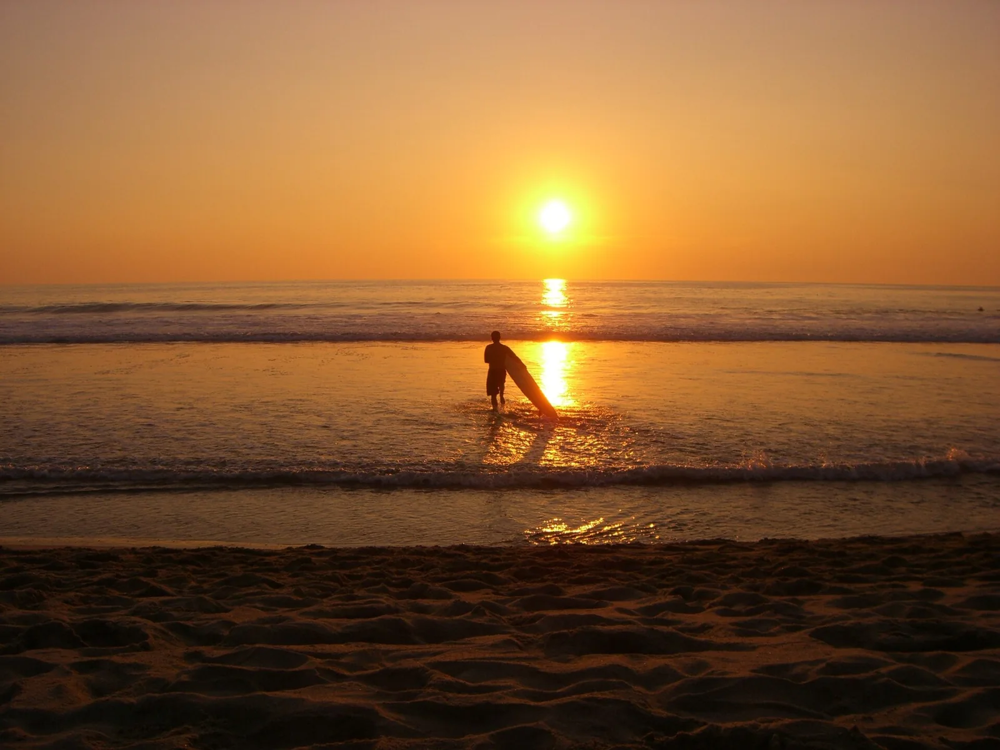

Zicatela — Puerto Escondido
Mexique · surf

La « Mexican Pipeline » : un beach break surpuissant qui balance des tubes énormes sur le sable.
- Lieu
- Mexique
- Niveau
- Expert
- Activités
- surf
- Type d'eau
- Mer / océan
- Coordonnées
- 15.83, -97.07 (position approximative du secteur)
Dangers à connaître
- Vagues très puissantes.
- Courants forts.
Le conseil d'Ocean Buddy
Beach break costaud et lourd ; travaille ton canard avant d'y aller.
Ouvrir dans Ocean Buddy Télécharger sur l'App Store
Source : Description historique Ocean Buddy · vérification externe en attente.